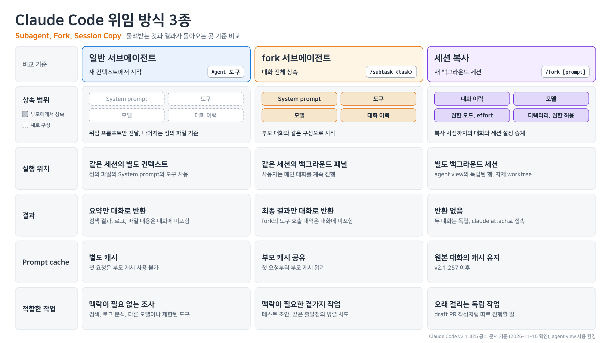
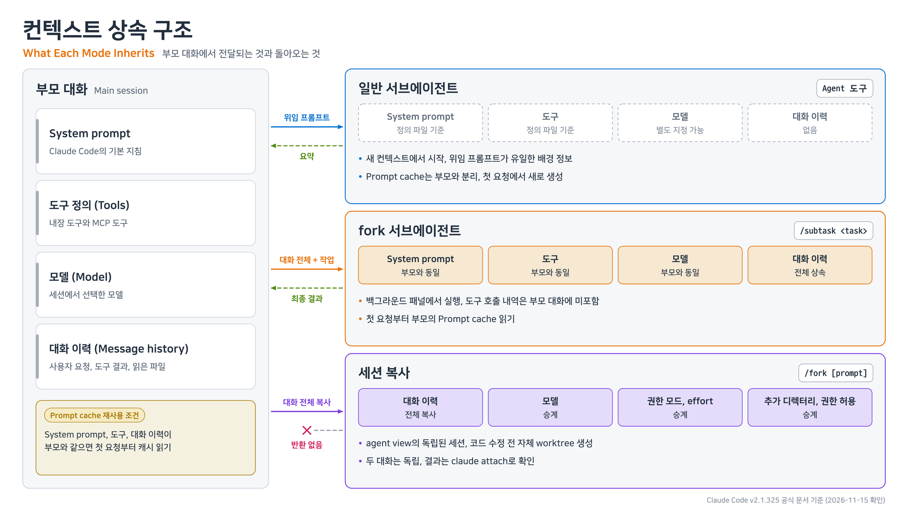
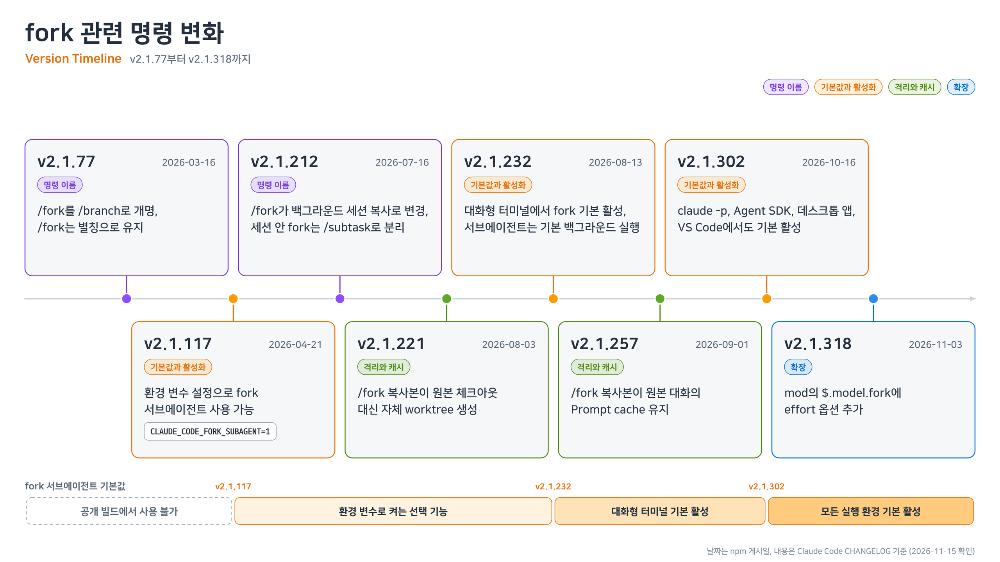
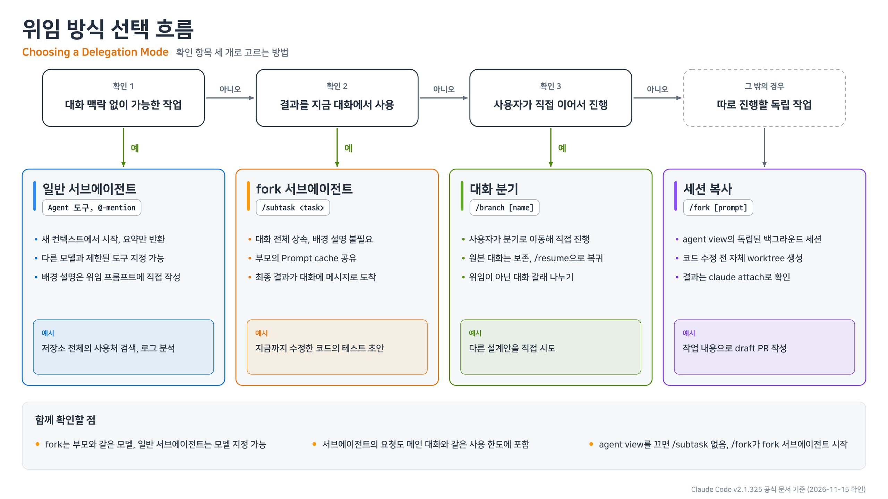

Claude Code에서 Subagent와 fork는 무엇이 다른가에 답하는 글입니다. 일반 서브에이전트는 위임 프롬프트만 받아 빈 컨텍스트에서 시작하고, fork는 대화 전체를 물려받습니다. 둘 다 결과만 지금 대화로 돌려줍니다. /fork 명령은 이름과 달리 대화를 독립된 백그라운드 세션으로 복사하며 결과가 돌아오지 않습니다.This post answers how a subagent differs from a fork in Claude Code. A regular subagent starts in an empty context with only the delegation prompt, and a fork inherits the whole conversation. Both return only their result to the current conversation. The /fork command, despite its name, copies the conversation into an independent background session, and its result does not come back.
/subtask): 시스템 프롬프트, 도구, 모델, 메시지 이력을 물려받고 부모의 프롬프트 캐시를 읽습니다.Fork (/subtask): inherits the system prompt, tools, model, and message history, and reads the parent's prompt cache./fork: v2.1.212부터 대화를 새 백그라운드 세션으로 복사합니다. 두 대화는 독립입니다./fork: copies the conversation into a new background session as of v2.1.212. The two conversations are independent.Claude Code에서 작업을 나눠 맡기는 방법은 하나가 아닙니다. Claude가 Agent 도구로 서브에이전트(Subagent)를 실행하기도 하고 사용자가 /subtask, /fork, /branch를 직접 입력하기도 합니다. 이름이 비슷한 데다 2026년 한 해 동안 /fork의 동작이 여러 번 바뀌어서, 몇 달 전 글의 설명이 지금 동작과 맞지 않는 경우가 많습니다.
이 글은 두 가지 질문으로 이 방법들을 구분합니다. 새로 시작하는 쪽이 부모 대화에서 무엇을 물려받는가, 그리고 작업 결과가 어디로 돌아오는가입니다. 설명은 2026년 11월 15일에 확인한 Claude Code v2.1.325의 공식 문서와 변경 기록을 기준으로 합니다.

먼저 결론입니다.
/subtask로 시작하고 최종 결과가 지금 대화로 돌아옵니다./fork는 대화를 새 백그라운드 세션(background session)으로 복사합니다. 복사본은 독립된 세션이어서 결과가 지금 대화로 돌아오지 않습니다./branch는 위임이 아닙니다. 대화의 분기를 만들고 사용자가 그 분기로 옮겨 갑니다.fork라는 이름은 두 곳에 사용됩니다. 대화를 물려받는 서브에이전트(fork)와 대화를 새 세션으로 복사하는 명령(
/fork)입니다. 이 글에서는 서브에이전트 쪽을 fork, 명령 쪽을 세션 복사라고 부릅니다.
01
작업을 다른 실행 단위에 맡기는 방식은 세 가지입니다. 표 1에 각 방식이 무엇을 물려받고 어디에서 실행되며 결과를 어떻게 돌려주는지 정리했습니다.
| 구분 | 일반 서브에이전트 | fork 서브에이전트 | 세션 복사 |
|---|---|---|---|
| 시작 방법 | Claude가 Agent 도구로 위임, 사용자의 @-mention | /subtask <task>, 또는 Claude가 스스로 시작 | /fork [prompt] |
| 물려받는 것 | 위임 프롬프트 | 시스템 프롬프트, 도구, 모델, 메시지 이력 | 복사 시점까지의 대화, 모델, 권한 모드, effort, 세션 중 추가한 디렉터리와 권한 허용 |
| 실행 위치 | 같은 세션의 별도 컨텍스트 | 같은 세션의 백그라운드 패널 | 별도 백그라운드 세션. agent view에 독립된 행으로 표시 |
| 결과 | 요약이 대화로 돌아옴 | 최종 결과가 대화에 메시지로 도착 | 돌아오지 않음. 복사본 세션에서 확인 |
| 프롬프트 캐시 | 별도 캐시 | 부모 대화의 캐시 공유 | 원래 대화가 만든 캐시 유지(v2.1.257 이후) |
| 맞는 작업 | 대화 맥락이 필요 없는 조사 | 맥락이 필요한 곁가지 작업 | 오래 걸리는 독립 작업 |
표 1. 위임 방식 세 가지 비교. Claude Code v2.1.325 공식 문서 기준, agent view를 사용하는 환경
회의에 비유하면 이해하기 쉽습니다. 일반 서브에이전트는 회의에 들어오지 않은 사람에게 메모 한 장으로 조사를 부탁하는 방식입니다. fork는 회의에 처음부터 참석한 동료에게 곁가지 일을 맡기고 결과만 보고받는 방식입니다. /fork는 회의록 사본을 들고 다른 방에서 따로 진행하는 팀을 만듭니다. /branch는 내가 직접 다른 방으로 옮겨 가는 경우입니다.
02
일반 서브에이전트는 자기만의 컨텍스트 윈도우에서 실행됩니다. 공식 문서에 따르면 서브에이전트는 대화 이력, 이미 호출한 skill, Claude가 읽어 둔 파일을 보지 못합니다. Claude가 작업을 요약한 위임 메시지를 작성하고 서브에이전트는 그 메시지에서 출발합니다.
시스템 프롬프트(system prompt)와 도구는 서브에이전트 정의 파일을 따르고 모델도 따로 정합니다. 검색 전용 에이전트에 읽기 도구만 주거나 단순한 작업을 더 저렴한 모델로 보내는 구성이 가능합니다.
결과는 요약만 돌아옵니다. 검색 결과, 로그, 파일 내용처럼 다시 볼 일이 없는 출력이 메인 대화를 채우지 않습니다. 반면 배경 설명이 긴 작업에는 맞지 않습니다. 지금까지 논의한 설계나 방금 고친 코드를 서브에이전트가 모르기 때문에 그 내용을 위임 프롬프트에 다시 적어야 합니다.
프롬프트 캐시(prompt cache)도 분리됩니다. 서브에이전트의 시스템 프롬프트와 도구 구성이 부모와 다르므로 첫 요청은 부모의 캐시를 읽지 못하고 자기 캐시를 새로 만듭니다. 서브에이전트의 캐시 TTL은 따로 지정하지 않으면 5분입니다.
03
fork는 처음부터 다시 시작하지 않고 지금까지의 대화를 그대로 물려받는 서브에이전트입니다. 공식 문서는 fork의 입력과 출력을 이렇게 정리합니다.
일반 서브에이전트와 달라지는 지점은 입력입니다. 결과만 돌려주어 메인 대화를 가볍게 유지한다는 점은 같습니다. 그림 2는 부모 대화의 구성 요소 가운데 각 방식이 무엇을 받는지 보여 줍니다.

사용자는 /subtask 뒤에 작업을 적어 fork를 시작합니다. 아래는 공식 문서의 예시로, 메인 세션에서 구현을 계속하는 동안 fork에 테스트 초안을 맡깁니다.
/subtask draft unit tests for the parser changes so farfork는 프롬프트 입력창 아래 패널에 나타나고 백그라운드에서 실행됩니다. 사용자는 기다리지 않고 메인 대화에서 하던 일을 계속합니다. fork가 끝나면 결과가 메인 대화에 메시지로 도착합니다.
패널에서는 위아래 화살표 키로 행을 고릅니다. Enter를 누르면 해당 fork의 기록이 열리고 거기에서 후속 메시지를 보냅니다. x는 실행 중인 fork를 멈춥니다. fork 모드가 켜져 있으면 사용자가 명령을 입력하지 않아도 Claude가 스스로 fork를 시작합니다.
fork의 시스템 프롬프트와 도구 정의는 부모와 같고 대화 이력도 그대로 물려받습니다. 그래서 fork의 첫 요청은 부모 대화가 만들어 둔 프롬프트 캐시를 읽습니다. 공식 문서는 이 재사용 덕분에 같은 맥락이 필요한 작업에서는 fork가 새 서브에이전트보다 비용이 적게 든다고 설명합니다.
맥락이 필요 없는 작업이라면 사정이 다릅니다. fork는 항상 부모와 같은 모델로 실행되고 긴 대화 이력을 함께 보냅니다. 일반 서브에이전트는 짧은 프롬프트로 시작하고 더 저렴한 모델을 지정할 수 있습니다. 대화와 무관한 조사는 일반 서브에이전트에 맡기는 편이 낫다고 판단합니다.
isolation: "worktree"를 넘기면 fork의 파일 수정이 별도 git worktree에 기록됩니다. 넘기지 않으면 fork는 현재 체크아웃에서 작업합니다.04
/fork는 이름과 달리 fork 서브에이전트를 시작하는 명령이 아닙니다. 현재 대화를 새 백그라운드 세션으로 복사하고 원래 대화는 그대로 이어집니다. 프롬프트를 함께 넘기면 복사본이 바로 그 작업을 시작합니다.
/fork open a draft pull request with the work so far복사본은 이렇게 동작합니다.
claude agents에서 행을 골라 Space를 누르거나 claude attach <id>로 접속해 지시를 보냅니다.WorktreeCreate 훅도 없는 디렉터리, 또는 worktree.bgIsolation을 "none"으로 둔 저장소에서는 제자리에서 수정합니다./branch [name]은 현재 지점에서 대화의 분기를 만들고 사용자를 그 분기로 옮깁니다. 원래 대화는 보존되고 /resume으로 돌아옵니다. 누군가에게 일을 맡기는 명령이 아닙니다. 사용자가 직접 다른 방향을 시도할 때 사용합니다.
세 명령의 차이는 작업하는 주체와 사용자의 위치로 정리됩니다.
| 명령 | 작업하는 주체 | 사용자의 위치 | 결과 |
|---|---|---|---|
/subtask <task> | 대화를 물려받은 서브에이전트 | 지금 대화에 그대로 | 지금 대화에 메시지로 도착 |
/fork [prompt] | 복사된 백그라운드 세션 | 지금 대화에 그대로 | 복사본 세션에 남음 |
/branch [name] | 사용자와 Claude | 분기로 이동 | 분기에 남음. 원래 대화는 /resume으로 복귀 |
표 2. /subtask, /fork, /branch의 차이
agent view를 끄면 /subtask가 제공되지 않고 /fork가 fork 서브에이전트를 시작합니다. 같은 명령이 환경에 따라 다르게 동작하므로, 명령을 팀에 공유할 때는 agent view 사용 여부를 함께 적어 두는 편이 안전합니다.
05
혼란은 /fork라는 이름이 버전에 따라 다른 동작을 가리켰기 때문에 생깁니다. 그림 3과 표 3은 변경 기록에서 확인한 내용입니다.

| 버전 | npm 게시일 | 변경 내용 |
|---|---|---|
| v2.1.77 | 2026-03-16 | /fork를 /branch로 개명. /fork는 별칭으로 유지 |
| v2.1.117 | 2026-04-21 | CLAUDE_CODE_FORK_SUBAGENT=1로 fork 서브에이전트 활성화 가능 |
| v2.1.121 | 2026-04-27 | 같은 환경 변수가 SDK와 claude -p의 비대화형 세션에서도 동작 |
| v2.1.212 | 2026-07-16 | /fork가 대화를 새 백그라운드 세션으로 복사. 세션 안 서브에이전트는 /subtask로 분리 |
| v2.1.221 | 2026-08-03 | /fork 복사본이 원래 세션의 체크아웃 대신 자기 worktree를 생성 |
| v2.1.232 | 2026-08-13 | 대화형 터미널에서 fork 서브에이전트 기본 활성. 대화형 세션의 에이전트 실행이 기본적으로 백그라운드로 전환 |
| v2.1.257 | 2026-09-01 | /fork 복사본이 원래 대화의 프롬프트 캐시를 유지 |
| v2.1.302 | 2026-10-16 | claude -p, Agent SDK, 데스크톱 앱, VS Code에서도 fork 기본 활성 |
| v2.1.318 | 2026-11-03 | mod의 $.model.fork에 effort 옵션 추가 |
표 3. fork 관련 변경 기록. 날짜는 npm 게시일 기준
예전 자료를 읽을 때 확인할 항목입니다.
/fork는 세션 복사가 아닙니다. 변경 기록에 따르면 그 전의 /fork는 세션 안 서브에이전트를 실행했습니다. v2.1.77 전에는 대화 분기를 만드는 명령이었습니다. 이 버전에서 /branch로 이름이 바뀌었습니다.claude -p와 Agent SDK, 데스크톱 앱, VS Code는 v2.1.302입니다./fork 복사본이 원래 세션의 체크아웃에서 작업했습니다. 지금은 자기 worktree를 만듭니다.v2.1.318의 변경은 mod를 만드는 사람에게 해당합니다. mod API에서 $.model.complete는 프롬프트만 단독으로 보내고 $.model.fork는 현재 대화 끝에 프롬프트를 더해 보냅니다. 여기에서도 fork는 대화를 물려받는다는 뜻으로 사용됩니다.
06
확인할 것은 세 가지입니다. 대화 맥락 없이 가능한 작업인지, 결과를 지금 대화에서 이어서 사용할지, 사용자가 직접 진행할지입니다.

/subtask로 fork를 시작합니다. 지금까지 고친 코드의 테스트 초안처럼 배경 설명이 길어지는 작업에 맞습니다. 같은 출발점에서 여러 접근을 병렬로 시도할 때도 fork를 사용합니다./fork로 세션을 복사합니다. draft pull request 작성처럼 오래 걸리고 결과를 나중에 확인해도 되는 일입니다./branch를 사용합니다.어느 방식이든 서브에이전트가 보내는 요청은 메인 대화와 같은 사용 한도에 포함됩니다. 여러 개를 병렬로 실행하면 그만큼 한도가 빨리 줄어듭니다.
07
fork 모드가 켜져 있으면 Claude가 스스로 fork를 시작하고 서브에이전트를 실행한 뒤 완료를 기다리지 않습니다. 결과를 먼저 받아야 다음 단계로 넘어가는 작업 흐름에서는 이 동작을 바꿔야 할 때가 있습니다. 방법은 두 가지입니다.
설정 파일의 permissions.deny에 "Agent(fork)"를 넣으면 Claude가 fork를 시작하지 못합니다. 다른 서브에이전트는 그대로 동작합니다.
{
"permissions": {
"deny": ["Agent(fork)"]
}
}환경 변수 CLAUDE_CODE_FORK_SUBAGENT를 0으로 설정합니다. settings.json에 넣은 뒤 claude를 다시 실행하면 적용됩니다.
{
"env": {
"CLAUDE_CODE_FORK_SUBAGENT": "0"
}
}이 상태에서 "reviewer 서브에이전트를 실행하고 보고서를 기다려 줘"처럼 요청하면 Claude가 결과를 기다립니다. 기다리는 동안 다른 일을 하려면 터미널에서 Ctrl+B를 눌러 백그라운드로 보냅니다. fork 모드를 꺼도 /subtask는 그대로 동작합니다.
일반 서브에이전트와 fork의 차이는 물려받는 컨텍스트에 있습니다. 일반 서브에이전트는 위임 프롬프트만 받고 fork는 대화 전체를 받습니다. 둘 다 결과만 지금 대화로 돌려준다는 점은 같습니다. /fork는 이 둘과 다른 종류의 명령으로, 대화를 독립된 백그라운드 세션으로 복사합니다.
명령 이름보다 물려받는 것과 결과가 돌아오는 곳을 기준으로 기억하는 편이 오래 유효합니다. Claude Code는 배포 주기가 짧아 명령과 기본값이 다시 바뀔 가능성이 있습니다. 새 버전을 설치했다면 변경 기록에서 fork, subtask, branch 항목을 먼저 확인하는 것을 권합니다.
There is more than one way to hand off work in Claude Code. Claude can run a subagent through the Agent tool, and you can type /subtask, /fork, or /branch yourself. The names are similar, and the behavior of /fork changed several times during 2026, so a post written a few months ago often no longer matches what the command does today.
This post tells these methods apart with two questions: what does the new unit inherit from the parent conversation, and where does its result go? The descriptions follow the official documentation and changelog of Claude Code v2.1.325, checked on November 15, 2026.
The conclusions first.
/subtask, and its final result comes back to the current conversation./fork copies the conversation into a new background session. The copy is an independent session, so its result does not come back to the current conversation./branch is not delegation. It creates a branch of the conversation and moves you into it.The name fork is used in two places: the subagent that inherits the conversation (fork) and the command that copies the conversation into a new session (
/fork). This post calls the subagent a fork and the command a session copy.
01
There are three ways to hand work to another unit of execution. Table 1 summarizes what each one inherits, where it runs, and how it returns its result.
| Item | Regular subagent | Fork subagent | Session copy |
|---|---|---|---|
| How it starts | Claude delegates through the Agent tool, or you @-mention it | /subtask <task>, or Claude starts one on its own | /fork [prompt] |
| What it inherits | The delegation prompt | System prompt, tools, model, message history | The conversation up to the copy, the model, permission mode, effort, and the directories and permission grants added during the session |
| Where it runs | A separate context in the same session | The background panel of the same session | A separate background session, shown as its own row in agent view |
| Result | A summary returns to the conversation | The final result arrives as a message in the conversation | Does not return. Check it in the copy's session |
| Prompt cache | Separate cache | Shares the parent conversation's cache | Keeps the cache the original conversation built (v2.1.257 or later) |
| Good for | Research that needs no conversation context | Side tasks that need the context | Long, independent work |
Table 1. The three delegation modes compared. Based on the Claude Code v2.1.325 documentation, in an environment with agent view turned on
A meeting makes a useful analogy. A regular subagent is like asking someone who was not in the meeting to look something up from a one-page memo. A fork is like handing a side task to a colleague who sat through the whole meeting and getting only the result back. /fork sets up a team that takes a copy of the minutes and carries on in another room. /branch is you moving to another room yourself.
02
A regular subagent runs in its own context window. According to the official documentation, it does not see the conversation history, the skills already invoked, or the files Claude has already read. Claude writes a delegation message that summarizes the task, and the subagent works from that message.
The system prompt and tools come from the subagent's definition file, and the model is chosen separately. That makes it possible to give a search-only agent read tools only, or to route simple work to a lower-cost model.
Only a summary comes back. Output you will not look at again, such as search results, logs, and file contents, stays out of the main conversation. On the other hand, this mode is a poor fit for work that needs a lot of background. The subagent does not know the design you have discussed or the code you just changed, so you have to write that into the delegation prompt again.
The prompt cache is separate too. The subagent's system prompt and tool set differ from the parent's, so its first request cannot read the parent's cache and it builds a cache of its own. The cache TTL for a subagent is five minutes unless you set one.
03
A fork is a subagent that inherits the conversation so far instead of starting fresh. The official documentation describes its input and output as follows.
The difference from a regular subagent is the input. Both keep the main conversation light by returning only the result. Figure 2 shows which parts of the parent conversation each mode receives.
You start a fork by typing /subtask followed by a task. The example below, from the official documentation, hands a draft of the tests to a fork while you continue the implementation in the main session.
/subtask draft unit tests for the parser changes so farThe fork appears in a panel below the prompt input and runs in the background. You do not wait for it and keep working in the main conversation. When the fork finishes, its result arrives as a message in the main conversation.
In the panel, the up and down arrow keys move between rows. Pressing Enter opens the selected fork's transcript, where you send follow-up messages. x stops a running fork. While fork mode is on, Claude also starts forks on its own without you typing a command.
A fork's system prompt and tool definitions are identical to the parent's, and it inherits the conversation history as is. Its first request therefore reads the prompt cache that the parent conversation already built. The official documentation says that because of this reuse, a fork costs less than a fresh subagent for tasks that need the same context.
Tasks that need no context are a different matter. A fork always runs on the same model as its parent and sends the long conversation history along. A regular subagent starts from a short prompt and can use a lower-cost model. For research unrelated to the conversation, I find a regular subagent the better choice.
isolation: "worktree", the fork's file edits are written to a separate git worktree. Without it, the fork works in the current checkout.04
Despite its name, /fork does not start a fork subagent. It copies the current conversation into a new background session, and the original conversation keeps going. Pass a prompt and the copy starts on that task right away.
/fork open a draft pull request with the work so farThe copy behaves as follows.
claude agents and press Space, or connect with claude attach <id>, to send one.WorktreeCreate hook, or in a repository where worktree.bgIsolation is set to "none", it edits in place./branch [name] creates a branch of the conversation at the current point and moves you into it. The original conversation is preserved, and you return to it with /resume. It does not hand work to anyone. Use it when you want to try a different direction yourself.
The three commands differ in who does the work and where you end up.
| Command | Who does the work | Where you are | Result |
|---|---|---|---|
/subtask <task> | A subagent that inherited the conversation | Still in the current conversation | Arrives as a message in the current conversation |
/fork [prompt] | The copied background session | Still in the current conversation | Stays in the copy's session |
/branch [name] | You and Claude | Moved into the branch | Stays in the branch. Return to the original with /resume |
Table 2. How /subtask, /fork, and /branch differ
With agent view turned off, /subtask is not available and /fork starts a fork subagent instead. The same command behaves differently depending on the environment, so when you share a command with your team, it is safer to note whether agent view is on.
05
The confusion comes from the name /fork pointing to different behavior in different versions. Figure 3 and Table 3 list what I confirmed in the changelog.
| Version | npm publish date | Change |
|---|---|---|
| v2.1.77 | 2026-03-16 | /fork renamed to /branch. /fork kept as an alias |
| v2.1.117 | 2026-04-21 | CLAUDE_CODE_FORK_SUBAGENT=1 can enable fork subagents |
| v2.1.121 | 2026-04-27 | The same variable also works in non-interactive sessions of the SDK and claude -p |
| v2.1.212 | 2026-07-16 | /fork copies the conversation into a new background session. The in-session subagent moves to /subtask |
| v2.1.221 | 2026-08-03 | A /fork copy creates a worktree of its own instead of working in the original session's checkout |
| v2.1.232 | 2026-08-13 | Fork subagents on by default in the interactive terminal. Agent spawns in interactive sessions run in the background by default |
| v2.1.257 | 2026-09-01 | A /fork copy keeps the original conversation's prompt cache |
| v2.1.302 | 2026-10-16 | Fork on by default in claude -p, the Agent SDK, the desktop app, and VS Code as well |
| v2.1.318 | 2026-11-03 | A mod's $.model.fork gains an effort option |
Table 3. Fork-related changelog entries. Dates are npm publish dates
Check these points when you read older material.
/fork is not a session copy. According to the changelog, /fork launched an in-session subagent before that. Before v2.1.77 it was the command that created a conversation branch. That version renamed it to /branch.claude -p, the Agent SDK, the desktop app, and VS Code./fork copy worked in the original session's checkout. Now it creates a worktree of its own.The v2.1.318 change matters to people who write mods. In the mods API, $.model.complete sends your prompt on its own, and $.model.fork sends the current conversation with your prompt at the end. Here too, fork means inheriting the conversation.
06
There are three things to check: whether the task can be done without the conversation context, whether you will use the result in the current conversation, and whether you will do the work yourself.
/subtask. It suits tasks where the background would take long to explain, such as drafting tests for the code changed so far. Use forks as well when you want to try several approaches in parallel from the same starting point./fork. This is work that takes a while and whose result you can check later, such as opening a draft pull request./branch.In every mode, the requests a subagent sends count toward the same usage limits as the main conversation. Running several in parallel uses up the limit that much faster.
07
While fork mode is on, Claude starts forks on its own and does not wait for a subagent to finish after starting it. A workflow that needs a result before it moves to the next step sometimes has to change this behavior. There are two ways.
In your settings file, permissions.deny with "Agent(fork)" added stops Claude from starting forks. Other subagents keep working.
{
"permissions": {
"deny": ["Agent(fork)"]
}
}Set the environment variable CLAUDE_CODE_FORK_SUBAGENT to 0. Put it in settings.json and run claude again for it to take effect.
{
"env": {
"CLAUDE_CODE_FORK_SUBAGENT": "0"
}
}In this state, ask Claude to wait, for example "run the reviewer subagent and wait for its report", and it waits for the result. To do other work in the meantime, press Ctrl+B in the terminal to move the wait to the background. /subtask keeps working even with fork mode off.
The difference between a regular subagent and a fork is the context each inherits. A regular subagent gets only the delegation prompt, and a fork gets the whole conversation. Both return only their result to the current conversation. /fork is a different kind of command that copies the conversation into an independent background session.
Remembering what is inherited and where the result goes holds up longer than remembering command names. Claude Code ships often, so commands and defaults may change again. After you install a new version, I recommend checking the changelog for the fork, subtask, and branch entries first.
| No. | 출처Source | 종류Kind | 확인한 날Checked |
|---|---|---|---|
| 1 | Create custom subagents - Anthropic, Claude Code Docs | 공식 문서Official docs | 2026-11-15 |
| 2 | Commands - Anthropic, Claude Code Docs | 공식 문서Official docs | 2026-11-15 |
| 3 | Manage multiple agents with agent view - Anthropic, Claude Code Docs | 공식 문서Official docs | 2026-11-15 |
| 4 | How Claude Code uses prompt caching - Anthropic, Claude Code Docs | 공식 문서Official docs | 2026-11-15 |
| 5 | Use the mods API - Anthropic, Claude Code Docs | 공식 문서Official docs | 2026-11-15 |
| 6 | Claude Code CHANGELOG - anthropics/claude-code | 변경 기록Changelog | 2026-11-15 |
| 7 | @anthropic-ai/claude-code - npm (버전별 게시일) | 패키지 저장소Package registry | 2026-11-15 |